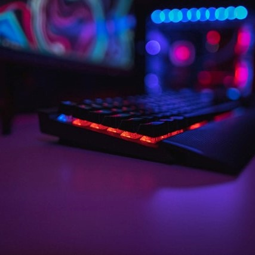
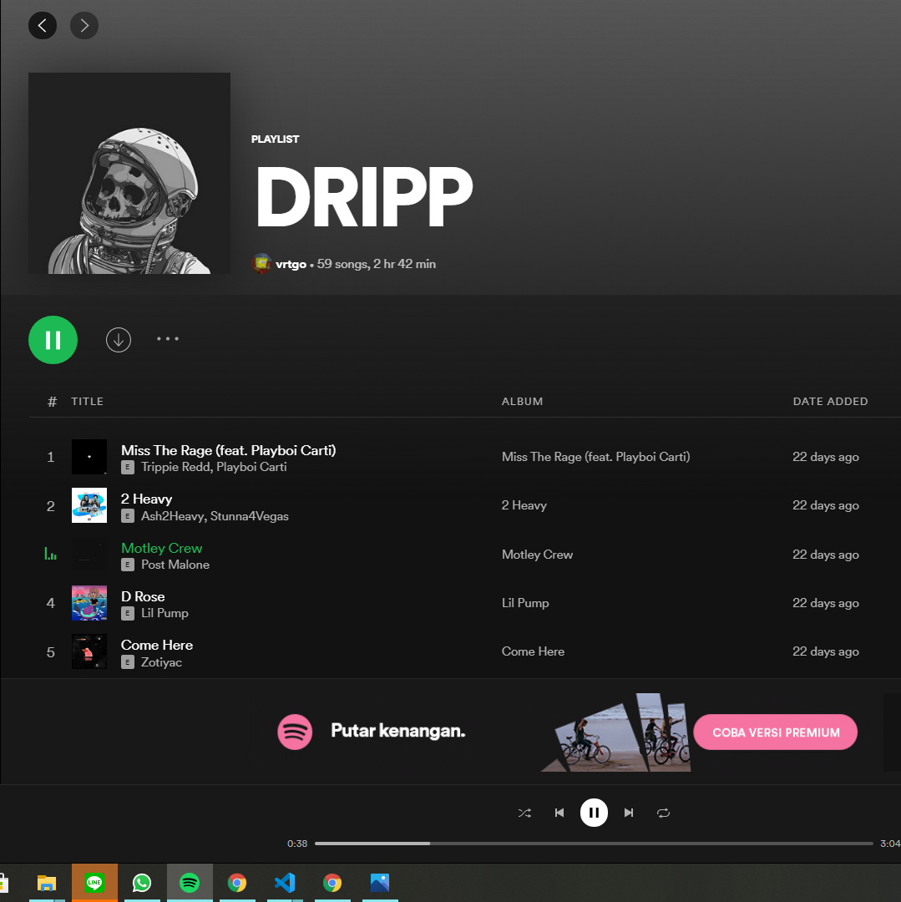

| Nama Lengkap | : Naufal Sadewa |
| Nama Panggilan | : Naufal |
| Tempat, Tanggal Lahir | : Surabaya, 12 Agustus 2001 |
| Alamat Rumah | : Pondok Maritim Indah O-18, BalasKlumprik, Wiyung, Surabaya |
| Asal Sekolah | : SMA Negeri 15 Surabaya |

BERMAIN GAME
Video game adalah tempat saya lari dari kenyataan.
Walau hanya dunia maya namun banyak memberi saya nilai-nilai kehidupan juga didalamnya,
khususnya dalam komunitas game yang saya gemari.
NONGKRONG
Nongkrong sehabis ngampus sama temen-temen sampe malem adalah harus.
Makan indomie dobel, pesen es teh jumbo, disambi ngerjain tugas + ngebahas politik + ngebahas konspirasi hukumnya fardhu 'ain :D
Sayang banget sekarang lagi pandemi begini, mau keluar nongkrong dilarang mulu sama ortu
soalnnya mereka khawatir saya jadi Orang Tanpa Gejala

DENGERIN LAGU
Selain ngegame, cara lain buat ngelupain masalah yang paling efektif menurut saya ya ini :)
Walau spotify saya masih suka bilang
"roti dan selai, bunga dan kumbang, romeo dan juliet. beberapa hal dalam hidup, memang ditakdirkan untuk selalu bersama.
sama halnya dengan dengerin lagu secara offline tanpa iklan dan tanpa batas di spotify premium, hanya dengan 54990 perbulan."
Tetap saja menurut saya istilah "No Music No Life" itu benar 100% :D
| : @naufal_sadd | |
| : 08977394796 | |
| Line | : naufalsade |